OpenAI 转守为攻：反诉苹果窃密，喊话「不公平竞争」
四维 88 ≈ 88
OpenAI 就苹果挖角与供应链施压一事正式提起反诉，指控苹果窃取商业机密并向供应商施压，喊话这是一场「不公平竞争」。这是两家围绕 AI 人才、芯片与供应链的暗战首次以互诉形式摆上台面。
💡 点评：从被诉到反诉，OpenAI 把「人才流动」重新定义为「商业机密」——这桩官司真正要裁决的，是大模型时代到底什么算偷。对行业来说，判例比赔偿金重要得多。
IT之家编者按：本份为每日两报新一期午报，覆盖 11 月 27 日 18:00 ～ 11 月 28 日 10:30。全页最高分是今日精选：OpenAI 反诉苹果窃密、喊话「不公平竞争」，把两家围绕 AI 人才与供应商的暗战摆上台面（88）。GitHub 当日热榜 16 仓与近两日完全同榜、全部在去重池内，仅 firecrawl 凭窗口内新发版放行一条一行式。Tier 0 四家均无窗口内重大节点：Apple 只有 iOS 27.3 / macOS 27.3 前瞻爆料（非官方节点），国内个人助手仅灵光上线科普动画生成这一单点功能（非大版本，不计入）。促销新标准（v2.5 §4-3）：黑五购物季命中促销 / 导购 65 条（黑五折扣清单、比价导购、预售到手价、限时焕新价等）−10 不乘系数后低于 70，全部丢弃不上页。出卡口径（评分标准 §3）：每主题前 3 名 + 全部 ≥84 出卡；锚点沿用 t-<主题>/c-<主题>-<序号> 新命名。
Tier 0 其余三家：Apple（本期无更新：窗口内仅 iOS 27.3 前瞻 AI 限额与 macOS 27.3 新功能爆料，属媒体前瞻非官方节点；智利 8000 万美元罚款与 OpenAI 互诉按普通条目计，不乘 Tier 0 系数）；Sony（本期无更新：窗口内无产品与政策新节点）；DSH（本期无更新：窗口内未见新发版与新节点）；国内个人助手（本期无更新：千问 Go 代打电话全量开放为 11-25 旧节点已过窗口；灵光窗口内仅上线科普动画生成单点功能、非大版本；小豆公测与小微财报数据均为前期节点；美团王兴「与小微合作按计划推进」属业务表态非产品节点）。
OpenAI 就苹果挖角与供应链施压一事正式提起反诉，指控苹果窃取商业机密并向供应商施压，喊话这是一场「不公平竞争」。这是两家围绕 AI 人才、芯片与供应链的暗战首次以互诉形式摆上台面。
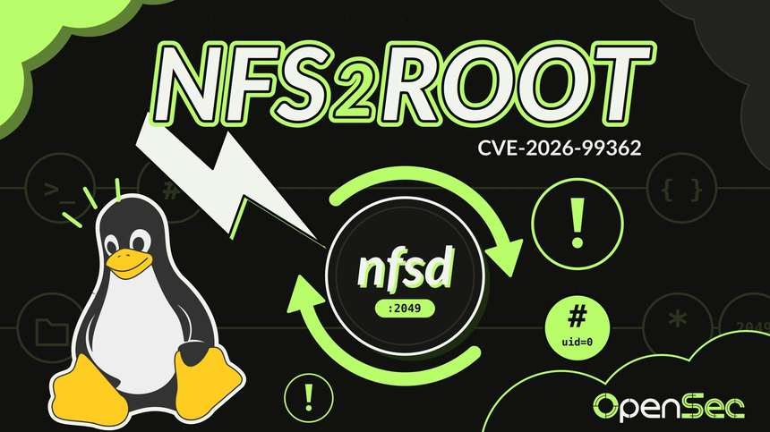
Linux 内核被曝出潜伏超 12 年的 CVSS 9.8 高危漏洞，攻击者无需登录即可拿到服务器 root 权限，补丁已随内核更新发布，运维需尽快升级。
IT之家「微软 2026 最大宕机」事件余波未平，Outlook 与 GitHub 再次出现服务故障反馈，微软云服务稳定性连续第二周承压。
IT之家美国多州政府起诉 SpaceX，要求叫停其旗下 Grok 模型生成儿童性虐待图片与色情报复内容，AI 产品的内容安全责任边界再度成为法庭议题。
Hacker News（hnrss）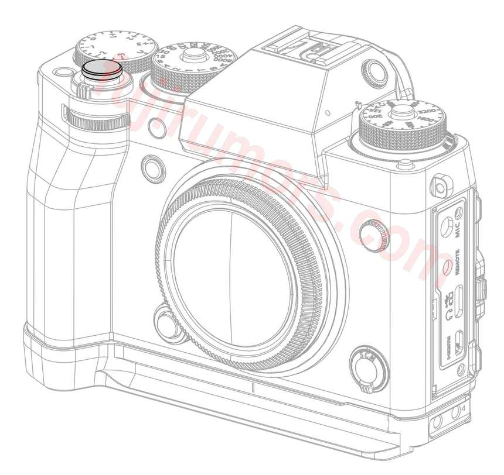
富士 X-T6 曝光为系列首款可拍 8K 视频的机型，电池容量提高 16% 并引入新胶片模拟模式。
IT之家pixiv FANBOX 宣布即日起不再支持 Mastercard 为成年向内容付费，创作者变现渠道进一步收窄。
IT之家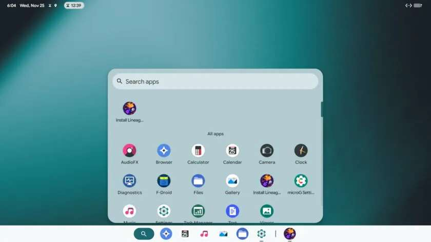
民间移植的 PC 版 LineageOS 24 登场，4GB 内存的电脑即可运行安卓 17。
IT之家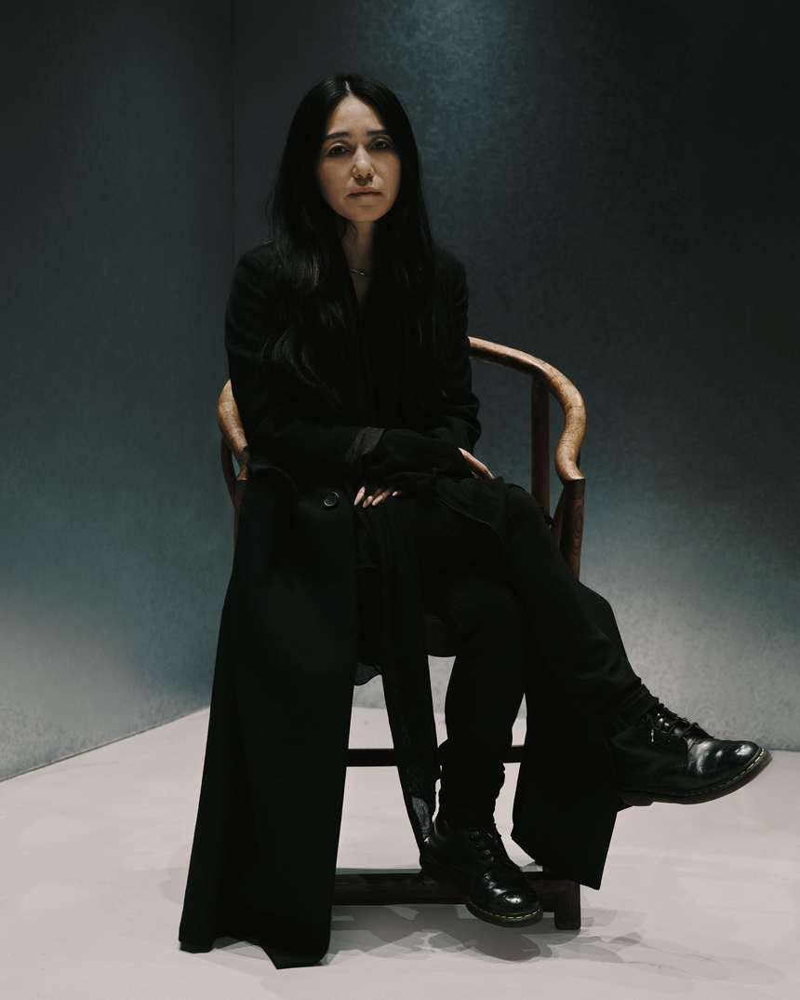
山本耀司之女、LIMI feu 主理人山本里美專訪：自認「不是時尚設計師，而是製衣之人」，談品牌四十餘年對「做衣服」這件事的固執。
Vogue Taiwan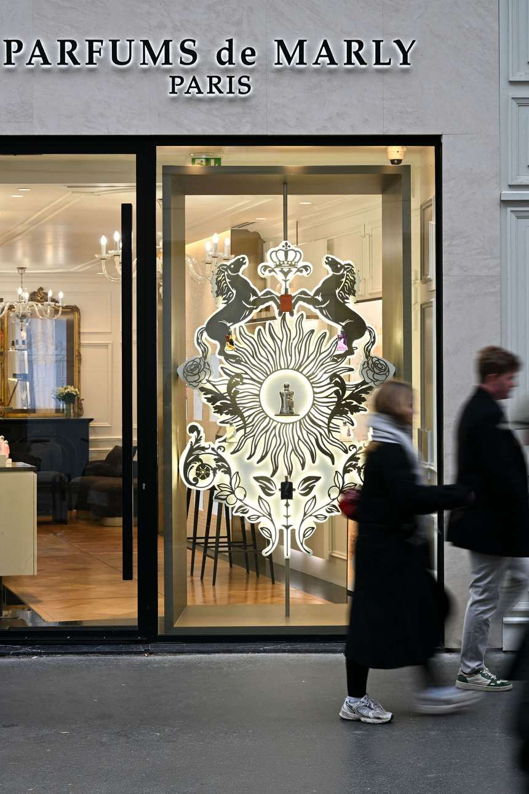
美妆巨头 Puig 宣布收购香氛品牌 Parfums de Marly 与 Initio，高端香水赛道整合继续加速。
VogueVictoria Beckham 发布 Pre-Fall 2027 系列，延续其利落剪裁与克制的色彩语言。
Vogue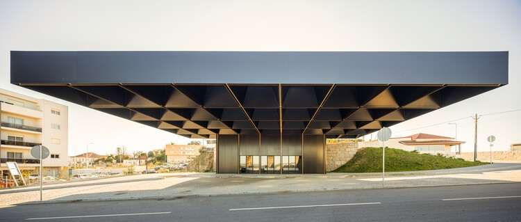
spaceworkers 的洛萨达多式联运枢纽：以清晰的流线组织多种交通方式的换乘，混凝土体量与场地地形咬合克制。
ArchDaily | ArchDaily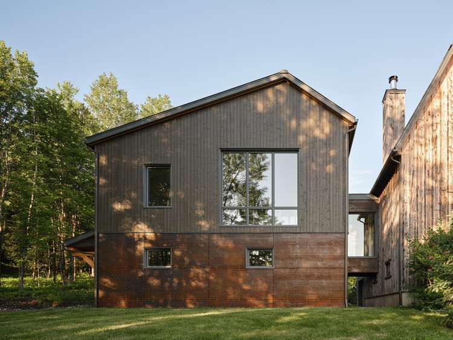
Projectoire 的 Verrière 住宅：以玻璃隔断（verrière）组织室内光线与视野，小体量住宅做出通透的空间层次。
ArchDaily | ArchDailyArquitectura Mixta 的 Espira 瑜伽馆：以螺旋动线串联练习空间，光线与材质共同营造安静的沉浸感。
ArchDaily | ArchDaily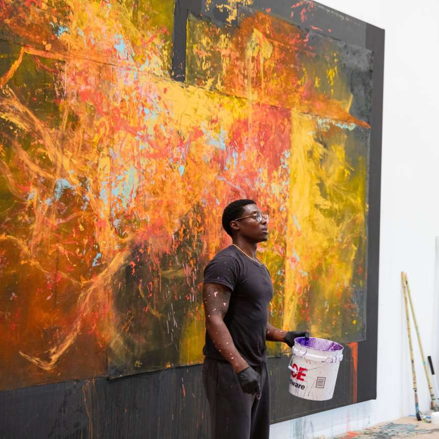
Reginald Sylvester II 入驻鲁贝尔美术馆驻留项目，延续这家以押中新人著称的美术馆的收藏传统。
迈阿密艺术周 2026 全档期盘点，从巴塞尔主展区到全城卫星展览一览。
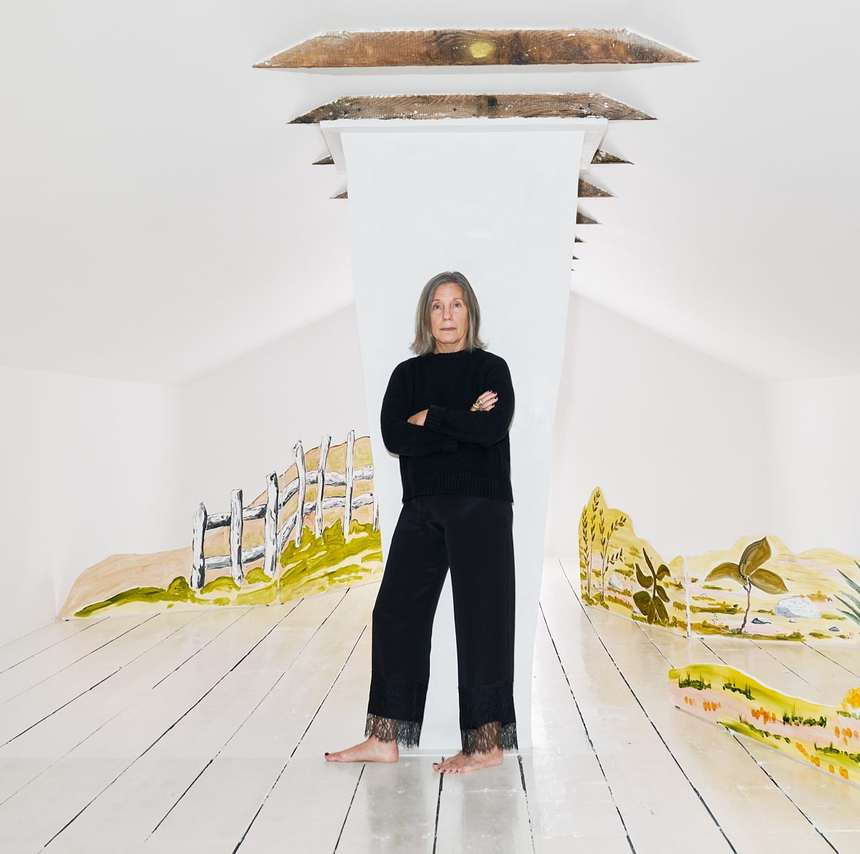
画廊人 Wendy Olsoff 回忆第一份画廊工作的薪水以作品支付，由此开启数十年的收藏之路。
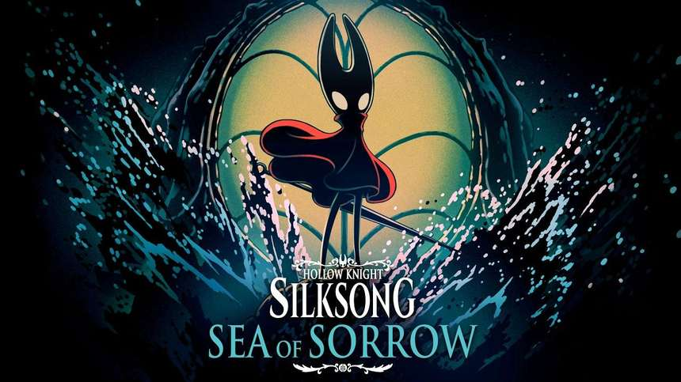
《空洞骑士：丝之歌》宣布首个大型扩展「悲恸之海」将于 12 月 11 日免费发布，本体发售不到两个月即迎来首波大型内容更新。
IT之家《GTA 6》女主角露西娅的扮演者佩雷斯公开致谢粉丝，透露为演好角色已投入近十年心血。
IT之家R 星联合负责人尼尔森表示《侠盗猎车手》系列的舞台不太可能离开美国，系列对美国本土文化的依赖是叙事根基。
IT之家上海地铁计次票 12 月 1 日启用，激活后 30 个自然日内有效，折合单次最低 4.33 元，高频出行成本进一步下探。
IT之家ELLE 伦敦逃离指南：从市集、美术馆到本地人常去的街区，一份编辑视角的城市漫游清单。
ELLE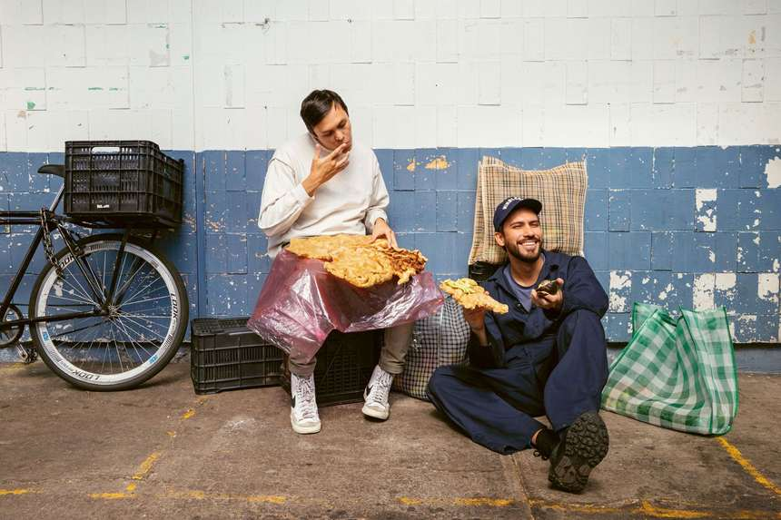
主厨 Santiago Lastra 谈墨西哥菜的当代表达：不必执着「正宗」，食材与风土才是出发点。
VogueDazed 年度榜单：2026 最佳专辑 20 张排名，电子与另类流行继续主导年景。
Dazed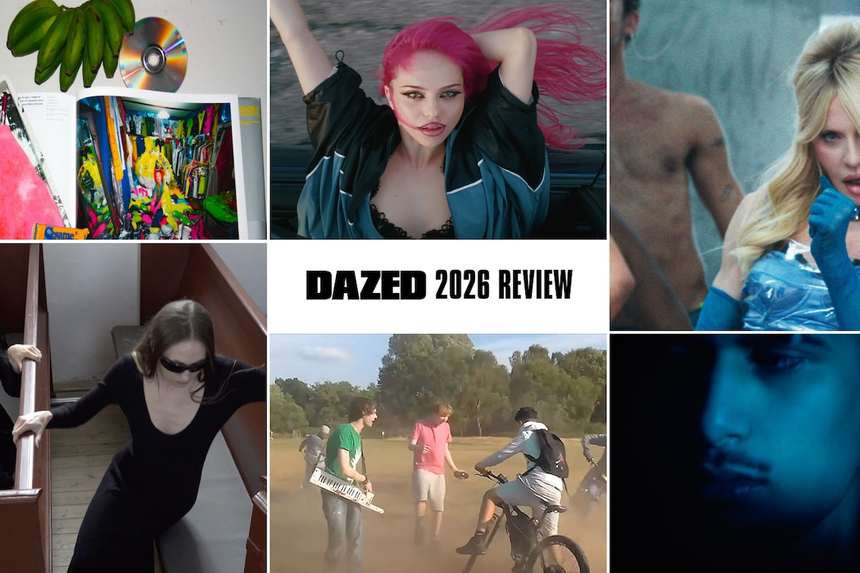
Dazed 年度单曲榜：2026 最佳单曲 20 首排名。
Dazed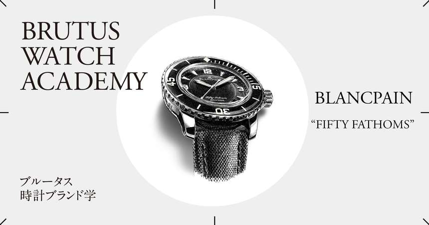
BRUTUS 時計品牌学第 93 回聚焦宝珀「五十噚」，回顧現代潛水錶的原型如何誕生。
BRUTUS.jp | ブルータスのウェブGitHub 当日热榜 16 仓与近两日完全同榜、全部在 3 天去重池内，按机械口径判 BLOCKED；窗口内仅 firecrawl 有 24 小时内新发版（v2.11.879 / v2.11.880），凭实质版本变化放行 1 条一行式；cursor/plugins 与 diagram-design 的窗口内 Release 为无版本号自动条目，不算实质变化，不收。